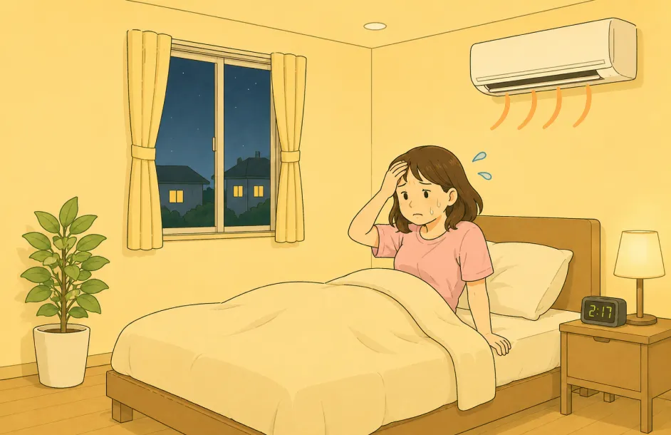
夜になっても、
2階の熱が抜けない。
昼の暑さがそのまま残っていて、夜になっても寝室がムワッと暑い。 エアコンをつけても寝苦しく、夜中に何度も目が覚めていませんか？
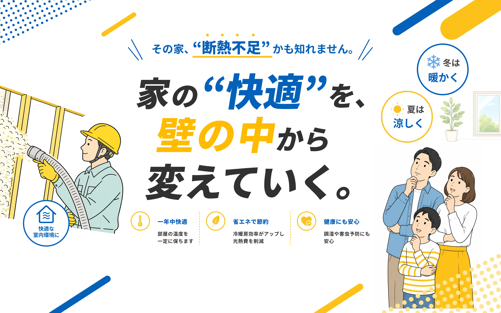

昼の暑さがそのまま残っていて、夜になっても寝室がムワッと暑い。 エアコンをつけても寝苦しく、夜中に何度も目が覚めていませんか？
帰宅してすぐ冷房を入れても、なかなか部屋が涼しくならない。 設定温度を下げても効きが悪く、気づけば電気代がかさんでいませんか？
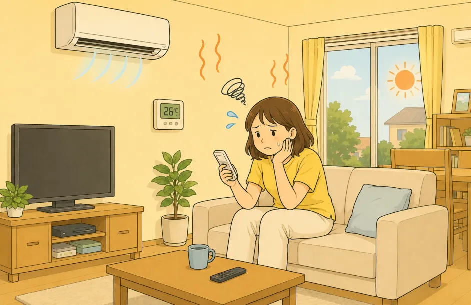
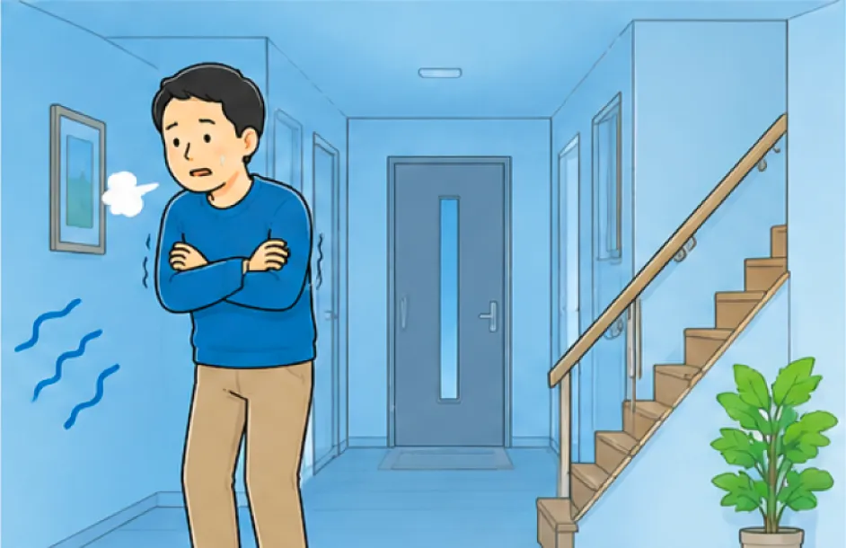
リビングは暖かいのに、廊下や脱衣所、トイレだけ異常に寒い。 夜中にトイレへ行くのが、億劫になっていませんか？
エアコンは動いているのに、床から冷えを感じる。 厚着やひざ掛けが当たり前になっていて、家の中でも我慢して過ごしていませんか？
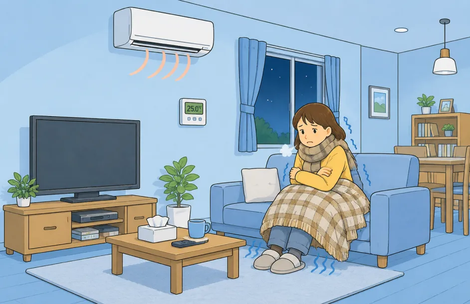
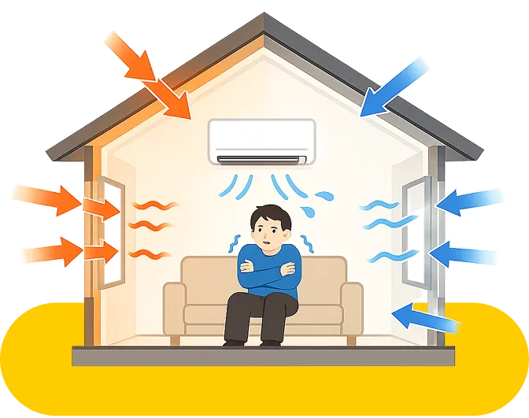
東海地方の湿度の高い夏、厳しい寒さを
夜までムワッと熱がこもっていた2階も、熱が入りにくくなることで、寝る時間には落ち着いた室温に。
エアコンを何時間も強運転し続けなくても、
寝苦しさを感じにくい、快適な寝室へ近づきます。
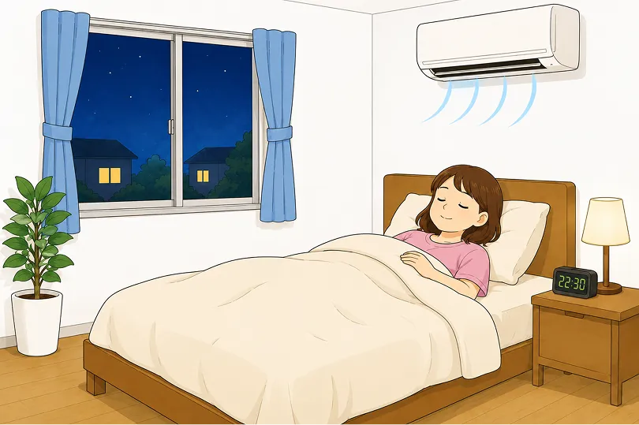
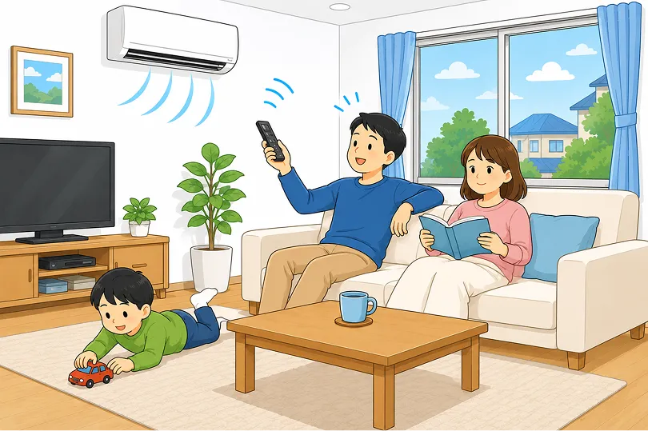
帰宅してすぐ冷房を強くする。暖房を長時間つけっぱなしにする。 そんな毎日も、断熱性能を見直すことで、室温が安定しやすくなります。
「エアコンを止めた瞬間すぐ暑い・寒い」
そんなストレスを減らせるかもしれません。
冬の夜、寒い廊下やトイレへ行くのがつらい。 脱衣所が寒くて、お風呂に入るのが億劫。
そんな家の中の急な温度差も、断熱性能を見直すことで、
やわらげられる可能性があります。
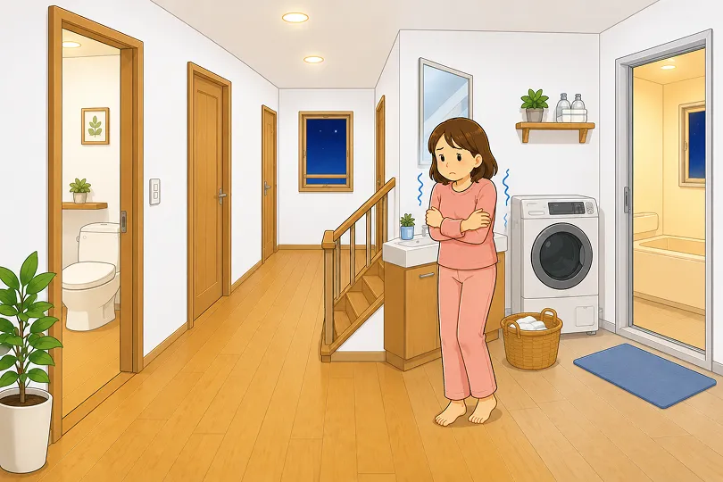
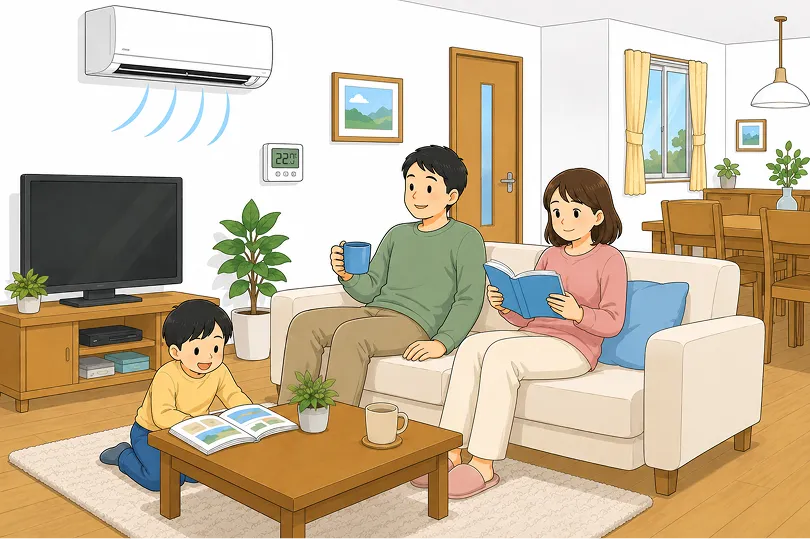
暖房をつけていても寒くて、靴下やひざ掛けが手放せない。
そんな“家の中で我慢する暮らし”も、断熱性能を見直すことで、
暖かさを保ちやすい空間へ。
冬でも、
リラックスして過ごしやすい家づくりにつながります。
“住みやすさ”をつくる、断熱材
「 新聞紙をリサイクルして作られた、
環境にも住まいにもやさしい自然素材の断熱材です。 」
細かな天然繊維が複雑に絡み合うことで、繊維の間に多くの空気層をつくります。 外気の暑さ・寒さが室内へ伝わりにくくなります。
高密度の繊維構造が、音の振動を吸収・分散。 外部の騒音や室内の生活音をやわらげます。
繊維自体にホウ酸が含まれており、防虫性もあります。 また、木質繊維由来の素材のため、湿気を吸収・放出する性質があります。
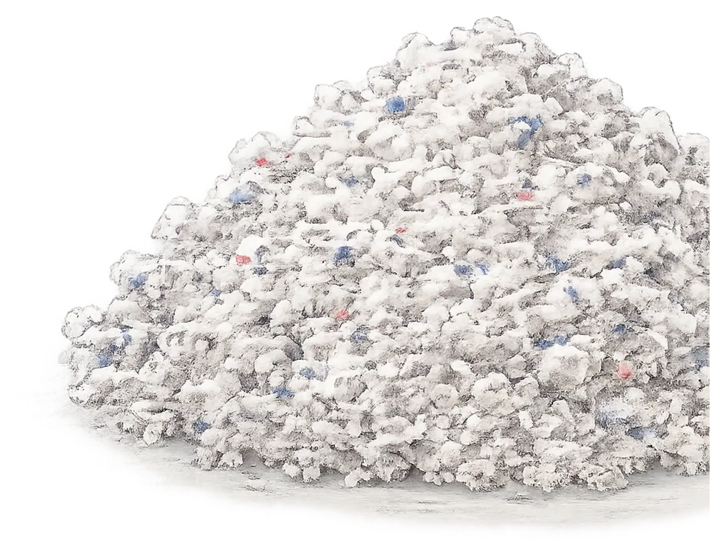
※ 弊社では木質繊維の断熱材も取り扱いしております。
今の家の断熱材と
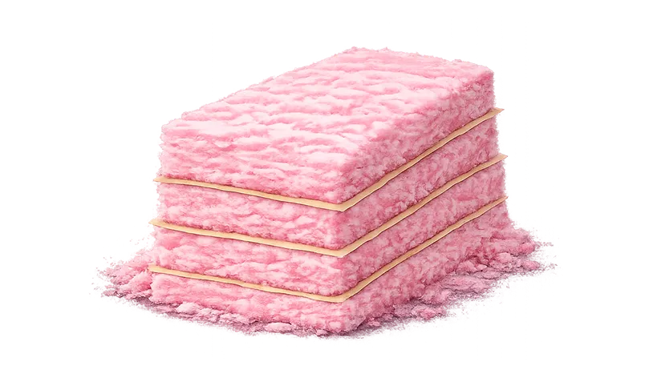
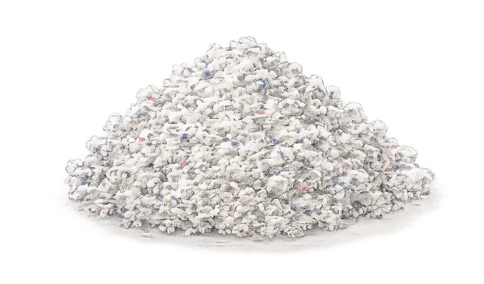
リフォーム後の“違い”を
50代 A様
来客時にトイレの音がリビングへ響くのが悩みでした。施工後は生活音がやわらぎ、家族も落ち着いて過ごせています。
60代 B様
2階の寝室が暑くて夜中に起きていましたが、今は控えめな設定でも涼しく感じます。電気代の負担も軽くなりました。
40代 C様
断熱目的でしたが、防音効果も想像以上でした。外の音や室内の響きが気になりにくく、一年を通して過ごしやすいです。
50代 D様
リビングから出るたびに寒さを我慢していました。施工後は温度差が気になりにくく、家の中の移動が楽になりました。


断熱リフォームのスムーズな
お電話またはお問合せフォームより、現在のお家の状況やお悩みをお伺いします。まずはお気軽にご相談ください！
専門スタッフが現地に伺い、お家の構造・断熱状況を確認します。現状に合ったご提案のための大切なステップです。
調査結果をもとに、お家に最適な断熱材の種類・施工箇所・費用対効果シミュレーションをご提示します。
断熱施工の費用を明確にご提示します。お見積もりは無料ですので、他社との比較にもご活用ください。
内容・費用にご納得いただけましたらご契約。ご都合に合わせて施工日程を調整します。
ご近所様へご挨拶の後、施工開始。セルロースファイバーなど選定した断熱材を丁寧に施工します。
施工後、断熱性能の確認を一緒に行います。快適さの変化を実感していただけます。
施工後も定期的なフォローを行います。「夏の暑さが下がった」「部屋が暖かい」などお喜びの声を多数いただいています。
1分で入力完了！